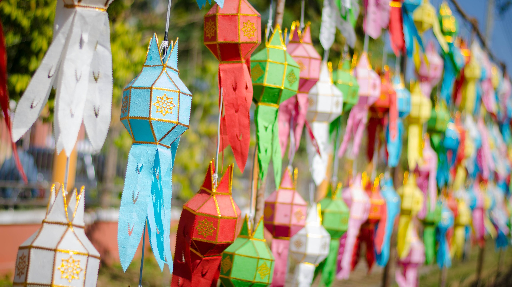

ประเพณีและวัฒนธรรม
ศิลปวัฒนธรรมและประเพณีล้านนาสะท้อนวิถีชีวิตที่ผูกพันกับพระพุทธศาสนา ความเชื่อเรื่องผี และธรรมชาติอย่างลึกซึ้ง มีเอกลักษณ์เฉพาะตัว เช่น ประเพณีสงกรานต์ (ปีใหม่เมือง), ยี่เป็ง, สืบชาตา, ตานก๋วยสลาก และการฟ้อนรำ ศิลปะโดดเด่นด้านสถาปัตยกรรมวัดวาอาราม, งานหัตถกรรมจักสาน, และดนตรีพื้นเมืองที่งดงาม ประเพณีล้านนา เป็นวิถีชีวิตและพิธีกรรมของชาวภาคเหนือที่สืบทอดกันมายาวนาน มีความผูกพันกับพุทธศาสนา ธรรมชาติ และชุมชน เช่น ประเพณียี่เป็งซึ่งเป็นการลอยโคมในคืนวันเพ็ญเพื่อบูชาพระพุทธเจ้า ประเพณีสงกรานต์หรือปี๋ใหม่เมืองที่มีการสรงน้ำพระและรดน้ำดำหัวผู้ใหญ่ ประเพณีเข้าอินทขีลหรือการบูชาเสาใจเมืองเพื่อความเป็นสิริมงคล ประเพณีบวชลูกแก้วซึ่งเป็นการบรรพชาสามเณรอย่างยิ่งใหญ่ และประเพณีตานก๋วยสลากที่เป็นการทำบุญอุทิศให้ผู้ล่วงลับ ทั้งหมดนี้สะท้อนถึงความศรัทธา ความสามัคคี และอัตลักษณ์อันงดงามของวัฒนธรรมล้านนา
